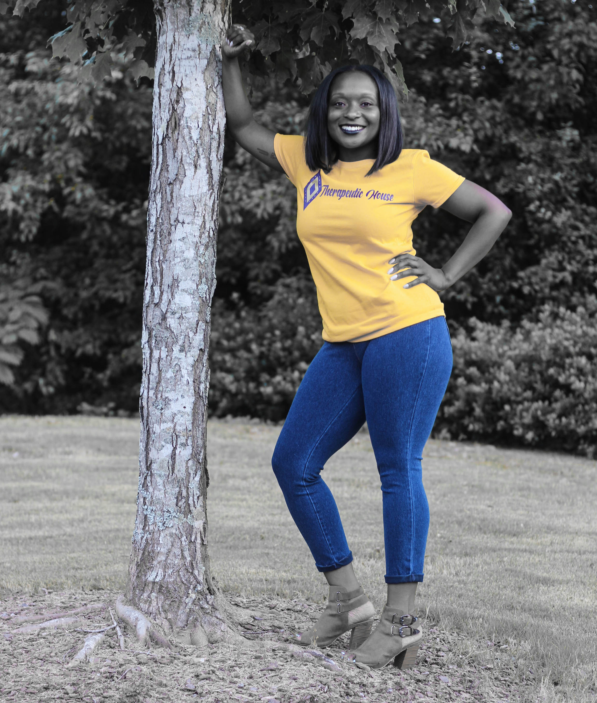

Danielle
Co-Founder
Danielle Galloway comes from a long line of natural and holistic healers and the gene is simply in her blood. She has a passion for healing people naturally with minimal to no usage of prescription medicines. Her first client was herself so she knows the ins and outs of the continuous healing process to get to the root cause rather than aiding the symptom. She travels all over the world gaining knowledge from different cultures on how they use herbs to educate and strengthen their communities. Although she resides in Roswell, GA she proudly serves the Metro Atlanta area and also provides at home visits by appointment. Danielle has created a business filled with passion, accountability, and team work for her clients. Whether it’s needing a chakra alignment, magnet therapy, or ear candling her clients know the job will be performed at the highest quality.
Melodie
Co-Founder
Melodie Moore is a scientist who holds a biology degree from her Alma Mater, Albany State University. Melodie works with meditation, magnet therapy, reflexology, herbal therapy, and natural childbirth. She believes that healing starts with a positive attitude, a good environment, and high energy. Through her own personal experience with a completely natural at home birth, Melodie has counseled several new mothers on alkaline feeding plans, cold remedies, and formulas. She currently works as a microbiologist for a private manufacturing company. She enjoys seeing her clients leave healthier and stronger after their initial visit. Being able to share simple ways to improve overall health and understanding how the body works on a holistic level is Ms. Moore’s number one goal.
Melodie
Co-Founder
Melodie Moore is a scientist who holds a biology degree from her Alma Mater, Albany State University. Melodie works with meditation, magnet therapy, reflexology, herbal therapy, and natural childbirth. She believes that healing starts with a positive attitude, a good environment, and high energy. Through her own personal experience with a completely natural at home birth, Melodie has counseled several new mothers on alkaline feeding plans, cold remedies, and formulas. She currently works as a microbiologist for a private manufacturing company. She enjoys seeing her clients leave healthier and stronger after their initial visit. Being able to share simple ways to improve overall health and understanding how the body works on a holistic level is Ms. Moore’s number one goal.
Danielle
Co-Founder
Danielle Galloway comes from a long line of natural and holistic healers and the gene is simply in her blood. She has a passion for healing people naturally with minimal to no usage of prescription medicines. Her first client was herself so she knows the ins and outs of the continuous healing process to get to the root cause rather than aiding the symptom. She travels all over the world gaining knowledge from different cultures on how they use herbs to educate and strengthen their communities. Although she resides in Roswell, GA she proudly serves the Metro Atlanta area and also provides at home visits by appointment. Danielle has created a business filled with passion, accountability, and team work for her clients. Whether it’s needing a chakra alignment, magnet therapy, or ear candling her clients know the job will be performed at the highest quality.
Our Mission
Our mission is to assist our clients in reaching their optimal health through magnetism, ear candling, and high vibrational foods.
Our Specialty
We specialize in various treatments in which magnetism is our key component. The services we provide:
- Magnet Water
- Hand/Foot Reflexology
- Ear Candling
- Chakra Alignment
- Feminine Pads
- Herbal Teas
Magnets increase the overall heath of the body by bringing up the vibrational frequency of the cells.